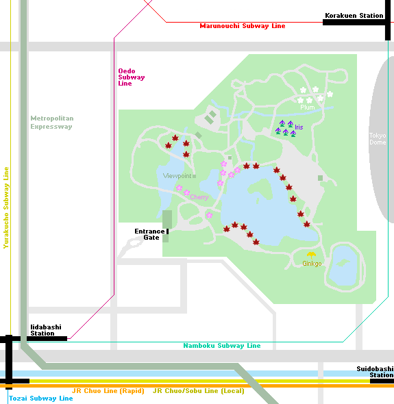
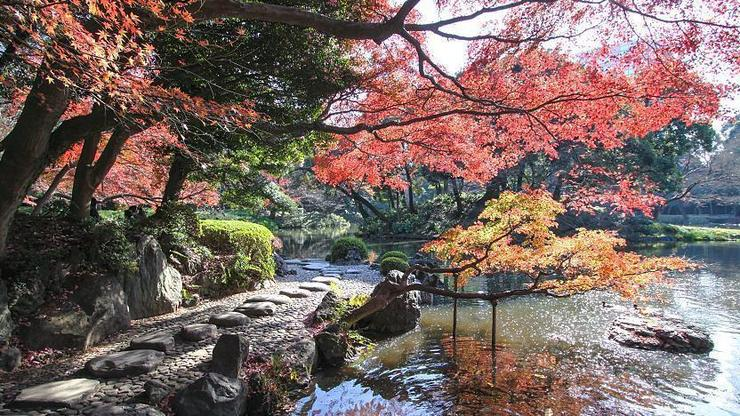
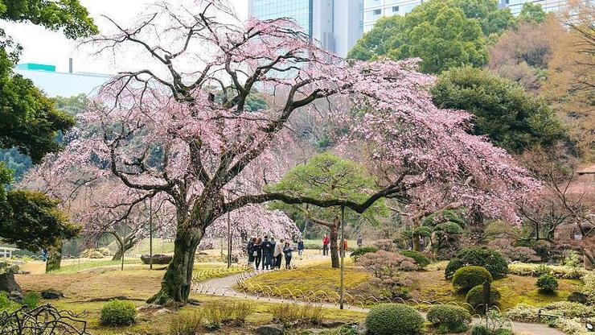

Koishikawa Korakuen
小石川後楽園
Koishikawa Korakuen (小石川後楽園, Koishikawa Kōrakuen) is one of Tokyo's oldest and best Japanese gardens. It was built in the early Edo Period (1600-1868) at the Tokyo residence of the Mito branch of the ruling Tokugawa family. Like its namesake in Okayama, the garden was named Korakuen after a poem encouraging a ruler to enjoy pleasure only after achieving happiness for his people. Koishikawa is the district in which the garden is located in.
Like most traditional Japanese gardens, Koishikawa Korakuen attempts to reproduce famous landscapes in miniature, using ponds, stones, trees and man-made hills to replicate both Japanese and Chinese scenery. A network of walking trails leads around to prescribed viewpoints from which visitors are meant to view the garden, which despite the relatively unobtrusive modern backdrop of Tokyo Dome and other buildings in the distance, remains a beautiful natural escape from urban Tokyo.
Koishikawa Korakuen is attractive throughout the year, but is especially so in late November and early December during the fall color season. Dozens of maple trees are planted around the garden's three ponds which turn vibrant shades of orange and red. There is also a small, almost hidden grove of ginkgo trees near the southeast corner of the garden that turn a golden yellow during autumn.
The garden is also nice during the plum season from mid February through March and during the cherry blossom season which usually takes place in late March and early April and features several early blooming weeping cherry trees around the garden's entrance gate. A rice field can also be found toward the rear of the garden.
